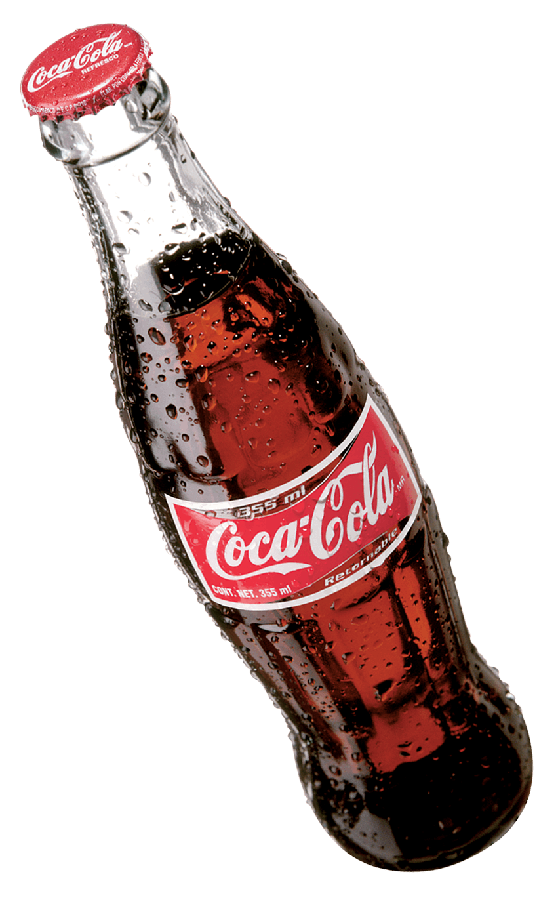
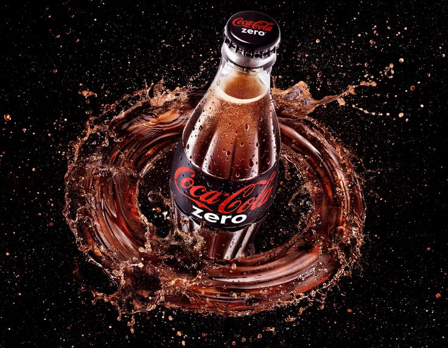

People have been enjoying Coca‑Cola for 138 years. They love the unique taste. But, we know people have concerns about eating or drinking too much sugar. That is why we’re taking action should you want less sugar.
And so you have choices to help manage your sugar and calorie intake, we have:
Many of our beverages contain sugar, which has calories. While sugar is fine in moderation, too much of it isn’t good for anyone. Having too many calories, including from soft drinks with sugar, can contribute to weight gain.
Since it debuted in the U.S., Coca‑Cola Zero has refreshed hundreds of millions of people with its real Coca‑Cola taste and zero calories. Now, the brand has a new name, new look, and even more delicious taste.
Through in-house innovation and extensive market testing, the no-calorie fan favorite delivers an even better-tasting recipe and goes by the name Coca‑Cola Zero Sugar. The new and improved recipe tastes like a Coke, but with zero sugar and zero calories. Coke Zero Sugar hit store shelves nationwide in August 2017.
The company continues to create new beverages and evolve its recipes and Coca‑Cola Zero Sugar represents our product innovation. It joins a roster of nearly 250 other delicious reduced-and no-sugar beverages offered in the U.S.
